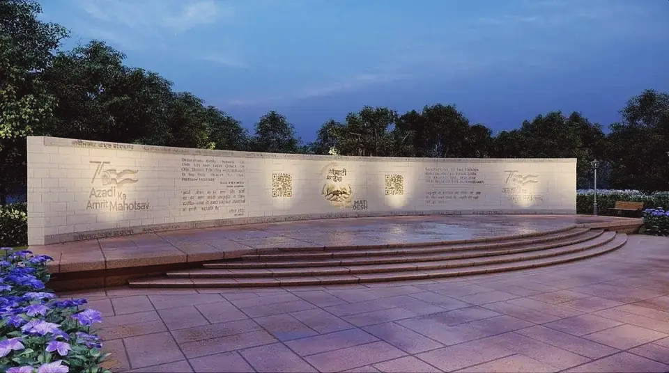
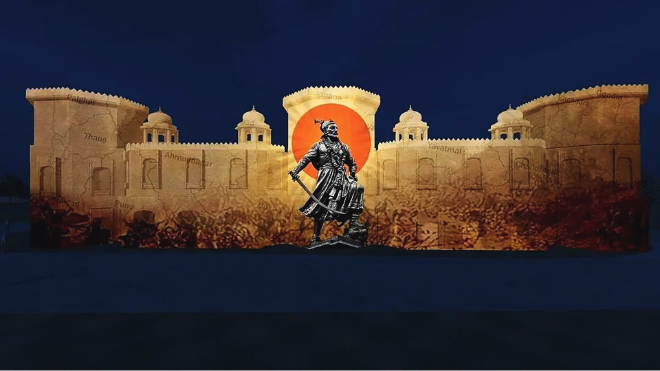
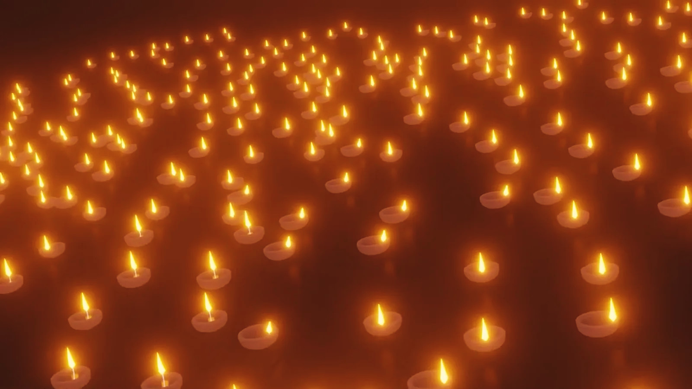
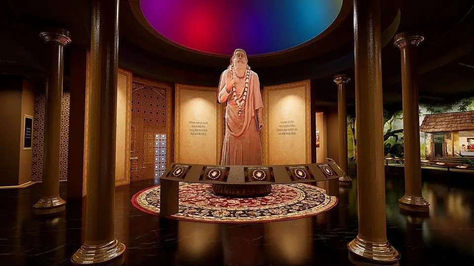
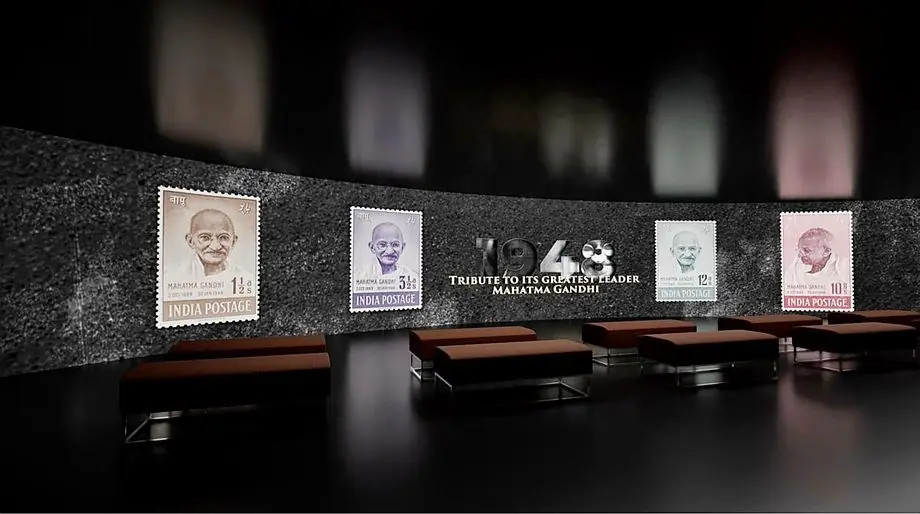
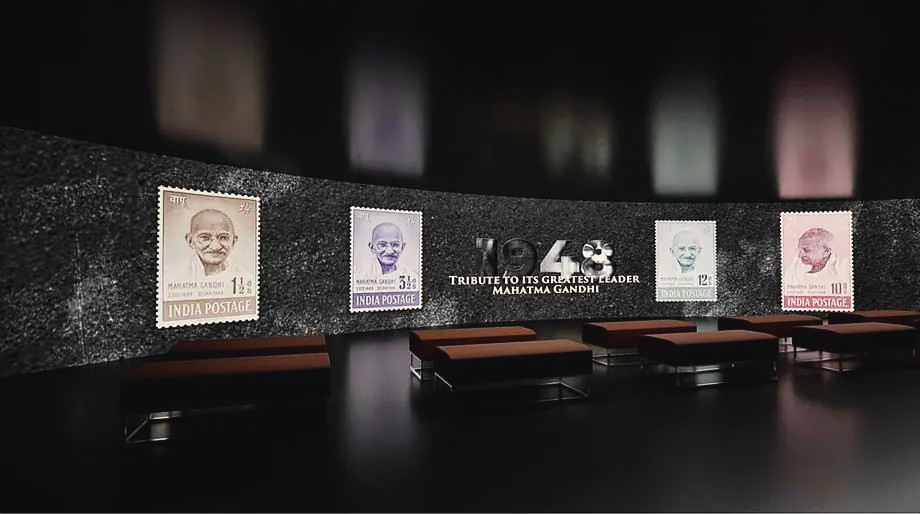
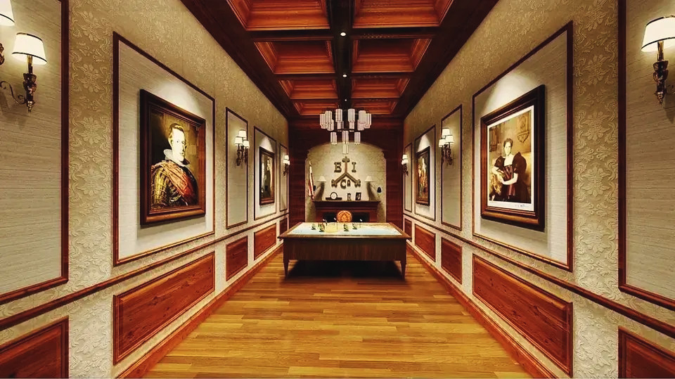
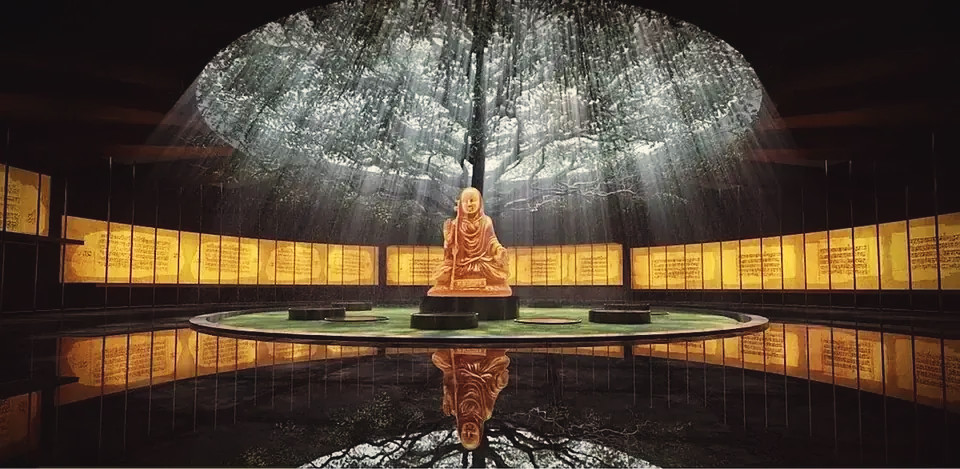

Photography & art direction · Guidelines · November 2026
The lit room.
How my rooms are photographed, graded, cropped and delivered. Sixteen pages. One light source.
Sanzeed Mirza · Experiential Design Consultant New Delhi · sanzeed.com
Photography guidelines · Contents02 / 16
Sixteen pages, one light.
03Photography style — the lit room03
04Lighting direction04
05Colour grading05
06Composition06
07Subject treatment07
08Background treatment08
09Portrait standards09
10Lifestyle · Product · Editorial10
11Environmental · Architectural11
12AI-generated imagery12
13Image selection criteria13
14Unacceptable imagery14
15Cropping standards and aspect ratios15
16File naming and delivery16
These are the rules I give every photographer who walks into one of my rooms. They are short because the rooms do the work.
Expose for the light. Keep the blacks. Let people walk in. Caption every picture like a wall label — title, place, one line — and deliver it in the four ratios the brand uses. Everything else on these pages is detail.
— Sanzeed Mirza
Prime Minister MuseumNew Delhi
Ram Katha ShowAyodhya
Army Museum Abu DhabiAbu Dhabi

Mera Mati Mera Desh MemorialNew Delhi
All photographs in this document are the client's own project visuals. Employee work — rights remain with the commissioning studio; portfolio and credential use.
A brief on one side, a visitor on the other, and a point of light that travels across the dark room between them. Every photograph is that room.

01 · One light source
Vadhu Tulapur MuseumMaharashtra
Every frame has one lamp: the sun behind the fort wall, the projector, the spot on the chair. Everything else is lit by it, or not at all. If two sources compete, move until one wins.
02 · Deep blacks
Postal Museum Projection ShowNew Delhi
Shadows go to Night, not to mud. Underexpose rather than lift. Detail held in the dark is a gift; noise in the dark is a fault. Never crush to pure black in camera — the grade lands black on Night.

03 · Warm highlights
Ram Katha ShowAyodhya
Highlights lean toward Lamp Gold: tungsten, flame, brass, stone. Cool light may exist in the frame — a screen, a doorway of daylight — but it never leads and it is never corrected to neutral.
04 · People as scale
Mahatma Gandhi EventNational
A figure tells the viewer how big the room is. One or two, moving, seen from behind. The room is the subject; the person is the ruler laid against it.
Key from the exhibit. The lit object is the key light. Spot-meter the brightest part you need to hold and let the room fall away. Do not add light to make the room "readable" — the darkness is the room.
02
No flash. On-camera flash flattens the space and kills projection. Off-camera light is allowed only to lift a visitor by at most one stop, gelled to the key's colour, never on the exhibit itself.
03
Mixed temperatures: one leads. Set white balance to the key — typically 3200–4000 K in warm interiors, 5000–5600 K at dusk outside. Cool sources (screens, LEDs, daylight through a door) stay cool, as the secondary, up to one stop under the key. Never neutralise them; never let them exceed the key.
04
Projection and shows. Let the show set the colour. Shoot RAW, white balance 4000 K as a start, tripod, low ISO, long exposure. Bracket ±1 stop; keep the frame where the projected image still holds highlight detail.
05
Hold the highlights. The lamp, the screen, the flame may clip at their centre only. If a white wall clips, you are a stop over.
Situation
ISO
Aperture
Shutter
Support
Interiors, galleries
400 – 1600
f/4 – f/8
1/30 – 1/125
tripod below 1/60
Projection, light shows
200 – 800
f/2.8 – f/5.6
1/15 – 1/60
tripod, cable release
Exteriors at dusk
100 – 400
f/8
1 – 10 s
tripod
Portrait
200 – 800
f/1.8 – f/2.8
1/125 – 1/250
85 – 105 mm, handheld
Starting points, not limits. The rule that cannot be broken is the first one: the exhibit is the key.
Reference curve, 8-bit, before the warm shift. Gold line = the grade; dotted = identity.
01
Contrast. A gentle sine S-curve, amount 0.18, pivoting on mid-grey. Midtones gain about 18 % slope; nothing clips.
02
Blacks to Night. Pure black lands on Night #0D0D0F (13 · 13 · 15), with a toe that fades out by input 22 %. Shadows keep a trace of detail and never crush.
03
Warm highlights. The brightest 45 % of the tonal range shifts toward Lamp Gold #E9B25A, from 0 % at 55 % luminance to a maximum tint of 10 % at pure white. Gains per channel at full strength: R 1.00 · G 0.976 · B 0.939.
04
No saturation boost. Saturation stays at 1.00. Colour comes from the show and the materials, never from the grade.
05
Apply it with the script.Approved_Images/grade.py in.jpg out.jpg — the same numbers every time. Approximate equivalents in Lightroom / Capture One: Contrast +10, Blacks +6, Highlights −5; Colour Grading → Highlights hue 40°, saturation 8; Saturation 0. Check against the reference pair below.

Before · camera file
Maharishi Valmiki MuseumPunjab
After · grade.py
Maharishi Valmiki MuseumPunjab · blacks to Night, stone warmed, dome untouched

Before · camera file
Postal Museum Projection ShowNew Delhi

After · grade.py
Postal Museum Projection ShowNew Delhi · the room stays black, the stamps lean warm
Photography guidelines · 06 — Composition06 / 16
Stand on the route. Look where the visitor looks.

01Freedom Fighter MuseumNew Delhi
One-point perspective along the route
Put the vanishing point on the thing the visitor is walking toward. Camera at eye height, lens 24–35 mm, centred on the route. The corridor's lines do the composing; keep them straight.
02Mahatma Gandhi EventNational
Thirds for people
Figures sit on the vertical thirds, feet on the lower third, facing into the frame and toward the light. Leave the centre to the room. Never cut a person at the ankles or the wrists.
03Ram Katha ShowAyodhya
Symmetry for architecture
When the room is symmetrical, the camera is on its axis — to the centimetre. Verticals straight; converge only when looking up at a ceiling. Horizon level, always. A tripod with a bubble level is not optional.
The same image, veiledgradient 0 → 72 % black over the lower 65 %
01
Backgrounds fall to Night. The wall behind the lit object is dark, plain and out of the way. If it is bright, you are facing the wrong way.
02
Remove the clutter at source. Cables, cones, bins, hi-vis, A-boards, fire extinguishers, the photographer in a mirror — move them or move yourself. Nothing is removed in post except dust.
03
The veil carries the words. When a headline, wall label or logo sits on the image, apply the brand veil: linear-gradient(180deg, rgba(0,0,0,0) 0%, rgba(0,0,0,.72) 100%) over the lower part of the frame. Text and logo sit on ≥ 80 % black.
04
Never over the lit object or a face. Text goes in the dark; the picture keeps the light. If the dark is at the top, veil from the top.
05
Plain backgrounds for cut-outs: none. Objects are never cut out onto white or black. They are photographed in the room, on their plinth, under their light.
Eye line 35 %Key warm, 45° leftBokeh 85–105 mm, f/2Garment black, no logos
Sanzeed MirzaNew Delhi · 3:4 crop of the reference portrait
01
Warm key from one side. A single warm source, 45° to camera, slightly above the eyes. Fill comes from the city, not from a reflector. No ring lights, no two-light "corporate" set-ups.
02
Bokeh, not a backdrop. A lit street or the room at night, far behind, thrown out of focus. The points of light are the brand's own motif. Never a paper roll, never a plain wall.
03
Black garment. Black or near-black, matte, no logos, no patterns. Glasses are fine; watch for reflections of the key.
04
Eye line on the upper third. Eyes at 35–38 % of the frame height, level, looking straight into the lens. Expression calm, unforced.
05
No retouching beyond the grade. No skin smoothing, no reshaping, no whitening. Dust only.
06
Deliver four ratios. 1:1, 4:5, 3:4 as crops with the eye line held; 16:9 as an extended plate with the figure on the right third — a landscape crop of a standing portrait is never made.
Allowed only for concept visuals. Mood frames, early massing, an atmosphere study inside a concept book or a research deck. Never as a substitute for a photograph of a room that exists.
02
Labelled "Concept visualisation". On the image as the eyebrow of its wall label, in the caption, in the alt text and in the file's metadata. The label is never cropped off and never set below 9 pt.
03
Never presented as built work. Not in the gallery, the case studies, press material, the "delivered" section of a proposal, or any post about an opening. The same rule covers 3D renders of unbuilt projects — they carry the same label.
04
Never of real people, real artefacts or a client's real building as if photographed. No faces, no national emblems, no recognisable artworks, no third-party logos in a prompt or an output.
05
Disclosure. The concept book's colophon states: "Concept visualisations made with [tool], [month year]; not photographs." Prompts, seeds and outputs are kept with the project files.
06
Licensing. Only tools whose terms grant commercial use and keep client material out of training. Client approval in writing before any external use. No image whose source rights are unclear enters the library.
07
Naming.sanzeed-concept-<project>--ai-<nn>.jpg. The sanzeed-img- prefix is reserved for photographs and documented renders of built work.

Concept visualisation
Tree ConceptUnbuilt · 3D render
The label plate for unbuilt workeyebrow · title · "Unbuilt"
This render is the client's own concept work, shown here to demonstrate the label. No AI-generated image appears anywhere in the brand package.
Blacks hold detail — nothing crushed to pure black, nothing lifted to grey.
03
Highlights lean warm; no cyan or magenta cast on anything white.
04
The route or the threshold is in frame (interiors).
05
Horizon level; verticals straight (architecture).
06
People, if present, are scale not subject: backs, profiles, moving.
07
No clutter: cables, cones, bins, signage, hi-vis, reflections of the photographer.
08
The lit object is sharp. Focus on the thing that is lit.
09
Resolution ≥ 3000 px long edge for print, ≥ 1920 px for web; no upscaling beyond 1.3×.
10
Colour untouched beyond the grade; saturation never boosted.
11
Rights and consent recorded: studio credit, client approval, consent for recognisable faces.
12
Captioned as a wall label — Title · Place — and "Concept visualisation" when unbuilt.
Passes · 12 / 12
G20 LED ShowGujarat
Passes · 12 / 12
RBI MuseumMumbai
Passes · labelled concept
India Pavilion Expo 2025Concept
The thirty approved images in Approved_Images/ each passed this list. Add to the library only through the same twelve questions, and record the answers in index.md.
The camera file, untouched. Archived as shot with the shoot's folder. Never delivered to anyone but me.
02 · TIFF master
16-bit, Adobe RGB (1998) or ProPhoto, full resolution, graded with the reference curve, verticals corrected, dust removed. One master per selected frame.
03 · JPG deliverables
From the master: sRGB, quality 90, 4:4:4. Print at 300 dpi for the trim size; web at the pixel sizes on page 15. WebP alongside for the site.
Wall label: Title · Place · one line, in the voice of the brand
Rights
Project photographs are employee work made for Tagbin, Sociopixel, DWS and B2W; rights remain with those studios. They are used for portfolio and credential purposes with a studio credit. New commissioned photography is licensed to Sanzeed Mirza for all brand uses in perpetuity, with the photographer credited where the medium allows.
Questions about a picture? Tell me about the room. sanzeed@gmail.com · +91 7827051270 (WhatsApp is fastest) · sanzeed.com